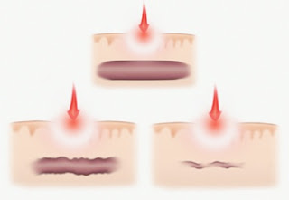
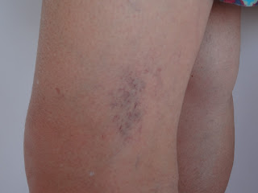
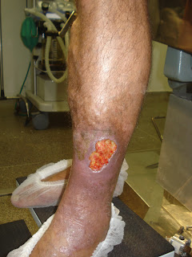
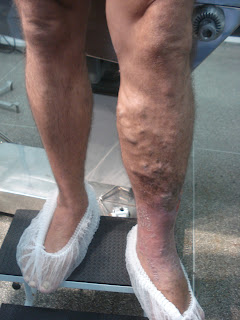

Tratamentos
- Aneurismas Arteriais
- Aterosclerose das Artérias Renais
- Aterosclerose das Carótidas
- Aterosclerose nos Membros Inferiores
- Cateteres para hemodiálise e quimioterapia
- Crioescleroterapia - tratamento de microvarizes sem cirurgia
- Dissecção da Aorta
- Doença Arterial Oclusiva Periférica
- Dores em MMII
- Embolização de Mioma Uterino
- Escleroterapia
- Espuma Densa
- Fístula Artério-Venosa
- Pé Diabético
- Radiofrequência - Tecnologia no tratamento das teleangiectasias
- Trombose Venosa
- Úlcera Varicosa
- Varizes – Radiofrequência
Aneurisma é a dilatação anormal e permanente de um determinado segmento de uma artéria. A origem desta dilatação é o enfraquecimento da parede do vaso, que pode ser congênito (presente desde o nascimento), ou secundário a outras doenças. Qualquer artéria pode ser acometida (por exemplo, nos membros inferiores ou cérebro), mas o local onde ocorre com maior frequência é na aorta abdominal.

Uma vez que a parede do vaso torna-se mais fraca, ela cede à constante pressão do sangue em seu interior e se dilata, aumentando de diâmetro. Essa dilatação tende a ser progressiva, podendo ocasionar a trombose ou a rotura da artéria, situações sempre de extrema gravidade, que podem culminar com o comprometimento da circulação local e consequente risco de perda de um membro (amputação) ou levar à morte do paciente por hemorragia, mesmo antes que ele consiga chegar ao Hospital.
Deve-se chamar atenção que frequentemente esta é uma doença silenciosa, com ausência de sintomas em grande número de casos. Ou seja, o paciente com aneurisma nada sente no início, aparecendo manifestações apenas tardiamente, muitas vezes levando a situações de emergência. Todo aneurisma deve ter a avaliação do Angiologista / Cirurgião Vascular para que seja tratado adequadamente, de forma a evitar complicações.
As artérias renais são vasos que saem da aorta, levando sangue para ser filtrado pelos rins. Algumas pessoas podem ter essas artérias obstruídas pelo acúmulo de placas de colesterol e cálcio, diminuindo o fluxo de sangue para os rins. As principais causas dessa obstrução são: idade avançada, diabetes, hábito de fumar, hipertensão, colesterol elevado, obesidade, sedentarismo e história familiar de aterosclerose.

Na maioria dos pacientes esta obstrução não apresenta sintomas, sendo descoberta ocasionalmente quando se investiga outra doença vascular. O principal sintoma é a presença de hipertensão de difícil controle com remédios, geralmente sendo necessário o emprego de mais de dois tipos de medicação em doses elevadas na tentativa de controle dos níveis pressóricos.
Quando existe a necessidade de intervenção, o tratamento atualmente é realizado por técnica minimamente invasiva, por cateterismo da artéria renal, realizado através de uma punção na virilha. O tratamento da aterosclerose das artérias renais pode evitar a perda de um rim e melhorar o quadro da hipertensão arterial em alguns pacientes, com redução das medicações em uso para controle da hipertensão.
O paciente deve ser avaliado precocemente pelo Angiologista / Cirurgião Vascular para o diagnóstico preciso do grau de obstrução e definição da necessidade de intervenção, a fim de preservar uma função renal adequada.
A insuficiência vascular cerebral (obstrução dos vasos sanguíneos que irrigam o cérebro) é a terceira causa de morte na população adulta.
As artérias carótidas, juntamente com as artérias vertebrais, localizadas no pescoço, são responsáveis em garantir o adequado fluxo sanguíneo para o cérebro. A obstrução desses vasos, com consequente redução do fluxo, pode provocar o acidente vascular cerebral (AVC), cujo prejuízo ao cérebro dependerá do tempo de duração e da localização da obstrução. Pode ocorrer desde pequenas alterações nas vistas e desmaios, até paralisias (transitórias ou permanentes) ou mesmo a morte.

Na maioria dos pacientes esta obstrução não apresenta sintomas, sendo descoberta ocasionalmente quando se investiga outra doença vascular. O principal sintoma é a presença de hipertensão de difícil controle com remédios, geralmente sendo necessário o emprego de mais de dois tipos de medicação em doses elevadas na tentativa de controle dos níveis pressóricos.
É o acúmulo de placas de colesterol e cálcio nas artérias que irrigam a musculatura da coxa, da perna e dos pés. Por consequência, esses vasos podem sofrer diversos graus de obstrução, até mesmo a oclusão total. Nesses casos, o fluxo sanguíneo é mantido apenas por pequenas artérias, chamadas colaterais, que podem não ser suficientes para manter a irrigação adequada da musculatura durante o exercício, ou mesmo em repouso.

As principais causas dessa obstrução são: idade avançada, diabetes, hábito de fumar, hipertensão, colesterol elevado, obesidade, sedentarismo e história familiar de aterosclerose.
O principal sintoma dessa doença é a dor nas pernas: após caminhar, o paciente sente dor na panturrilha (“batata da perna”), precisando de alguns minutos de descanso para continuar a caminhada. Esta dor, que é decorrente da falta de sangue na perna, se repete em distâncias variadas, a depender do grau de entupimento dos vasos. Com o agravamento da doença, a distância fica cada vez menor, podendo o paciente chegar a apresentar dor mesmo parado (dor em repouso). O tratamento desta doença deve ser realizado pelo Angiologista / Cirurgião Vascular, que está apto a orientar o paciente em todas as fases da doença, desde o início dos sintomas, quando o tratamento ainda pode ser feito com medicações e exercício físico orientado, até nos casos mais avançados, onde uma intervenção se faz necessária. Essa intervenção, quando indicada, pode ser realizada através de uma cirurgia para desviar o fluxo de sangue ao redor da obstrução ou através de um procedimento minimamente invasivo por angioplastia, com ou sem uso de próteses vasculares, a depender do caso.
O uso cateteres para hemodiálise ou quimioterapia tem como objetivo garantir uma via segura e efetiva em uma veia de grosso calibre para a infusão de medicamentos ou filtração do sangue de forma confiável e repetida. Os cateteres utilizados podem ser de curta ou longa permanência, a depender do tempo previsto para a sua utilização.

É necessária a avaliação do Angiologista / Cirurgião Vascular para a escolha do local mais adequado de implantação do cateter, e assim minimizar possíveis complicações referentes ao seu implante e manutenção como: sangramento, infecção, lesões pulmonares ou nervosas, trombose, entre outras.
A técnica da crioescleroterapia consiste em resfriar um líquido esclerosante (glicose 75%) a uma temperatura próxima de -40°C. Desta forma, as microvarizes sofrerão tanto o efeito químico do esclerosante como o efeito térmico do frio, ocorrendo lesão na sua camada interna com consequente oclusão e posterior desaparecimento.
Assim, seu efeito é potencializado em relação a escleroterapia convencional.
Tem a vantagem de ser isenta do risco de reação alérgica, uma vez que o esclerosante utilizado é a glicose hipertônica.

Pode ser utilizada em varizes reticulares (<3mm) evitando microcirurgias com finalidade estetica. Também apresenta bons resultados quando combinada com outras técnicas no tratamento das microvarizes.
A dissecção aórtica ocorre quando a parede da aorta, principal vaso do corpo, composta por 3 camadas, se divide em duas, com a entrada do sangue fazendo um falso trajeto entre as camadas. Esta dissecção (falso trajeto) pode progredir por toda a extensão da aorta, iniciando-se no tórax e seguindo até as artérias dos membros inferiores, levando ao risco de obstrução do fluxo em vasos importantes (artérias que nutrem o fígado, rins, intestinos, entre outras) e ao risco de rotura da própria aorta, com consequências trágicas (risco de morte).

Entre os principais fatores de risco para essa doença, encontra-se principalmente a hipertensão, a aterosclerose e o hábito de fumar.
Nos casos de dissecção da aorta, o paciente relata uma dor intensa e aguda, que se inicia no tórax e se irradia na direção da coluna, de cima para baixo. Geralmente, o aparecimento dos sintomas está associado a uma crise de hipertensão arterial.
O diagnóstico e tratamento das dissecções requerem o suporte de centros de alta especialização. O tratamento depende do tempo de início da doença, da localização entre o início e o fim do falso trajeto, do diâmetro do vaso acometido e do comprometimento ou não das artérias viscerais (que nutrem os órgãos).
De acordo com as características da dissecção, o Angiologista / Cirurgião Vascular poderá definir o tipo de tratamento – se medicamentoso ou com intervenção, podendo esta última necessitar de cirurgia ou ser realizada por técnica minimamente invasiva com o implante de uma endoprótese através de uma incisão na virilha.
A Doença Arterial Obstrutiva Periférica (DAOP) é o conjunto de sinais e sintomas secundários à diminuição do fluxo sanguíneo aos membros inferiores. A prevalência desta patologia aumenta com a idade e é mais comum em homens. Os fatores de risco são hipertensão, hipercolesterolemia, tabagismo, obesidade, diabetes, estresse e sedentarismo. O sintoma inicial pode ser dor tipo cãimbra ou aperto desencadeada pelo exercício, melhorando com o repouso. Um quadro mais avançado pode se apresentar como dor de repouso, associado ou não a ferida de difícil cicatrização. O objetivo da avaliação periódica com Angiologista/Cirurgião Vascular é a detecção precoce do quadro. O tratamento pode ser clínico, cirúrgico ou endovascular.

Dores nos membros inferiores são queixas freqüentes em pacientes de todas as idades e podem ser causadas por diversos motivos. As causas podem ser: dores musculares, articulares, dos nervos e circulação.

É importante sempre observar as características da dor tais como: periodicidade, ou seja, se ela ocorre diariamente ou se é esporádica; em que momento do dia ela surge, se ocorre inchaço associado e se há algo que seja capaz de piorar ou melhorar essa dor.
Circulação é uma das causas mais comumente implicada nessa patologia. Por esse motivo é importante procurar um Angiologista/cirurgião vascular para avaliação e correto tratamento.
O mioma uterino é o tumor benigno mais frequente entre as mulheres. Estima-se que entre 40 a 80% das mulheres na idade reprodutiva são portadoras de mioma e, destas, pelo menos um terço necessitem de tratamento devido à presença de sintomas. Anualmente, cerca de 200.000 mulheres perdem o seu útero, mais de 40.000 realizam miomectomia (cirurgia conservadora) e outras 250.000 estão em terapia hormonal para o tratamento de miomatose uterina.

Provavelmente, menos da metade das mulheres que tem mioma no útero tem algum tipo de sintoma, sendo este descoberto no momento em que a paciente realiza um exame ginecológico de rotina. Os miomas podem provocar períodos menstruais intensos e prolongados, além de sangramentos atípicos, podendo levar à anemia. Também levam ao aparecimento de distensão abdominal com sensação de peso ou pressão na pelve, dor abdominal ou dor durante as relações sexuais e sensação de pressão na bexiga com vontade constante de urinar.
Toda mulher que tem mioma no útero e apresenta sintomas desconfortáveis é potencialmente candidata a fazer uma embolização, a depender da quantidade, tamanho e localização dos nódulos de mioma. Deve-se ter o acompanhamento com o Ginecologista para a adequada indicação dos casos em que se deve optar pela embolização de mioma ou outro método para o seu tratamento, assim como para o seguimento pós-embolização.
A embolização uterina é uma cirurgia minimamente invasiva e, portanto menos traumática que a cirurgia convencional. Requer somente uma pequena incisão na pele da virilha de aproximadamente 2 milímetros, por onde se introduz um cateter na artéria . Este cateter conduzido até alcançar as artérias uterinas que levam sangue para o útero e os miomas. Nesta posição são injetadas micropartículas por dentro do cateter até entupir estas artérias e comprovar que o mioma não recebe mais sangue.
Nos casos indicados para a o tratamento por embolização uterina, o Cirurgião Vascular habilitado em Angiorradiologia realiza o procedimento e acompanha a paciente em conjunto com o Ginecologista.
A escleroterapia é um dos diversos métodos de tratamento das varizes dos membros inferiores. Pode ser dividida em química ou física. Na escleroterapia química ocorre “aplicação”/injeção de medicamento esclerosante com o objetivo de destruir as veias. Existem várias substâncias que podem ser utilizadas (medicamento líquido ou espuma). Já na escleroterapia física é utilizado feixe de luz sobre o vaso – é a conhecida escleroterapia a laser.
Algumas complicações podem acontecer como: alergia ao esclerosante utilizado, manchas, feridas, sendo elas pouco freqüentes.
Nem todos os vasos têm a escleroterapia como melhor opção. Por isso é importante procurar um Angiologista/Cirurgião Vascular para avaliação.
O tratamento de varizes com aplicação de espuma densa é um método antigo e que ganhou força nos últimos anos com a evolução da medicina. É considerado um método seguro e é colocado como alternativa aos procedimentos intervencionistas cirúrgicos.

Pode ser realizado de forma ambulatorial, sem necessidade de internação. A recuperação é rápida podendo-se caminhar logo após o término do tratamento.
Também pode ser utilizado no tratamento de alguns hemangiomas e malformações venosas.
Dentre as diversas doenças crônicas existentes, uma das mais prevalentes é a insuficiência renal.
Essa patologia é caracterizada por uma falência total ou parcial do rim sendo necessário, em alguns momentos, a realização de hemodiálise. Os pacientes portadores dessa doença em estágio avançado necessitam de um acesso vascular enquanto dão continuidade ao seu tratamento.

Os acessos vasculares podem ser feitos através de cateteres ou pela confecção cirúrgica de uma fístula artério-venosa (comunicação da veia com a artéria), um procedimento simples que possibilita a realização da hemodiálise por longos períodos.
O Diabetes Mellitus é uma doença de alta prevalência mundial. A despeito dos avanços na medicina, ainda existe uma significativa taxa de amputação de membros inferiores, em decorrência das alterações nos pés dos pacientes diabéticos. As principais causas são decorrentes da neuropatia, obstrução circulatória e infecção. O diagnóstico de pé diabético pode ser feito apenas com um exame físico adequado durante uma consulta com Angiologista/Cirurgião Vascular. A prevenção quanto ao surgimento de feridas e evolução para quadros graves, depende do controle adequado dos níveis glicêmicos, além de cuidados específicos com calos, proeminências ósseas e lesões em estágios iniciais.

O TC 3000 é um aparelho termorregulador que libera um pulso de alta frequência através de uma agulha muito fina, promovendo a coagulação imediata das microvarizes e eliminando-as.

Como o estímulo ocorre seletivamente na ponta da agulha, sua ação é apenas no vaso alvo e o efeito nos tecidos vizinhos é limitado.
O tratamento é realizado em consultório médico especializado. Como não há infusão de substâncias esclerosantes, não há risco de reação alérgica.
Tem ótima indicação para o tratamento de microvarizes (teleangiectasias) em regiões mais sensíveis, como tornozelo e joelhos, uma vez que umas das vantagens do método é ser menos doloroso que os métodos tradicionais e não necessitar do uso de bandagens elásticas após o procedimento – não há sangramento ou hematomas com essa técnica.
A trombose venosa é quando ocorre a formação de um coágulo sanguíneo no interior das veias, geralmente nas pernas. Esse coágulo pode bloquear o fluxo sanguíneo e causar inchaço e dor. São fatores de risco para a trombose: imobilização por tempo prolongado (por exemplo, pacientes acamados), o hábito de fumar, histórico familiar de trombose, gravidez, Obesidade, cirurgia recente (especialmente cirurgia de quadril ou joelho), uso de anticoncepcional ou reposição hormonal e câncer.

A trombose requer cuidados imediatos, na maioria dos casos necessitando de internamento e deve ser acompanhada por um médico Angiologista / Cirurgião Vascular. Nos casos não tratados adequadamente, o coágulo pode se desprender e se deslocar na corrente sanguínea, o que é chamado de embolia, podendo comprometer a circulação dos pulmões (embolia pulmonar) e levar à problemas respiratórios graves ou até mesmo à morte.
As úlceras são patologias limitantes que influenciam na execução das atividades simples do dia a dia, além de funcionarem como porta de entrada para infecções.

Dentre as úlceras, uma das mais comuns é a de origem venosa, decorrente de uma insuficiência da circulação da perna e presença de varizes. Tal doença deve ser acompanhada por um angiologista ou cirurgião vascular e tem tratamento com possibilidade real de controle e cura.
A técnica de cirurgia de varizes com uso de radiofrequência visa o tratamento de pacientes que apresentam comprometimento das veias safenas ou das veias perfurantes (comunicam as veias superficiais com as mais profundas). É um procedimento que prevê uma alternativa menos invasiva, uma vez que simplesmente fecha a veia comprometida, inutilizando-a, sem a necessidade de extraí-la. Uma vez que a veia doente é fechada, outras veias saudáveis assumem sua função, melhorando o fluxo sanguíneo.

O método é realizado com a passagem de um fino cateter pela veia comprometida, através de punção ou por uma pequena abertura na pele. O cateter é então acionado pela energia de radiofrequência, que aumenta a temperatura nas paredes da veia, levando ao fechamento da mesma. A veia permanece no local, mas sem função. Essa técnica pode reduzir a formação de hematomas (manchas roxas) e a dor após a cirurgia, que frequentemente ocorre na cirurgia tradicional.
É necessária a avaliação do Angiologista / Cirurgião Vascular para a correta indicação da melhor técnica cirúrgica a ser utilizada em cada caso, a fim de minimizar possíveis complicações relacionadas ao método.